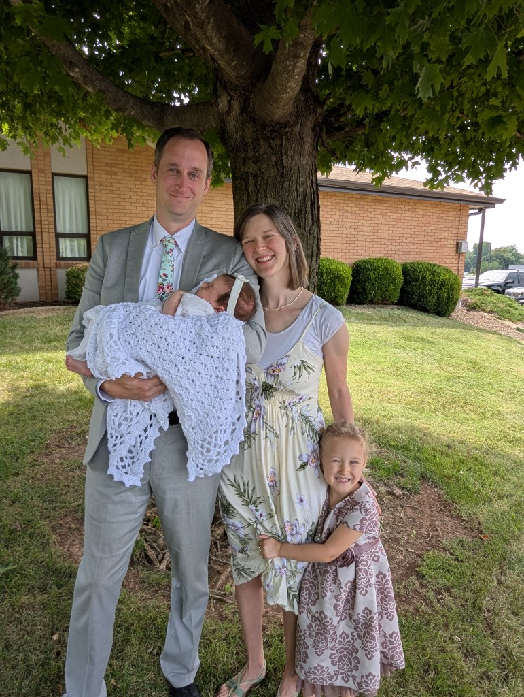

Practical Nursing Certificate
– OTC, Springfield, MO

Meet the Family
Let me introduce you to my family and share my health story. Nancyann and I have been married for over 12 years. In 2021, we welcomed Grace Miriam into our lives. In 2025, she was followed by a little sister, Esther Asenath. For us, family comes first and we love to spend as much time as possible with them. We also love walking, reading, and the great outdoors.
Credentials
– OTC, Springfield, MO
– MSU, Springfield, MO
– Logan University, Chesterfield, MO
Advanced Training
My Health Story
My health story is fairly similar to many of my patients. I dealt with chronic migraines for over 12 years. I started to get them in High School. It would often happen on the weekends and end up with me throwing up. As the years went on they started to happen almost everyday. Excedrin was my only relief, if I took it early enough. Otherwise, I would retreat into my bedroom, lights off, and hope that I could sleep it off.
When I went to the doctor, I was given a prescription and said that was my best bet. It helped for a time, but I wanted to get to the bottom of this. While I was at chiropractic school, I took a seminar with one of my mentors, Dr. Stephen Gangemi. He found that I was gluten intolerant. I was skeptical, but I tried it. Sure enough the migraines ceased. It was not the end of my health issues, but it was a massive leap forward. Since then, I have made drastic changes to my health for the better.
This inspired me to follow in Dr. Gangemi’s footsteps and learn from him and others. I have dedicated my life and over 500 hours of postgraduate education in nutrition, applied kinesiology, and functional medicine so I can effectively help my patients. I don’t want anyone to suffer for as long as I have or feel like there is no hope. There is always hope!Dr. Gabe Ariciu, DC